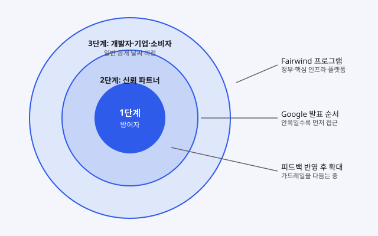
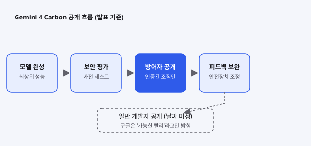

Gemini 4 Carbon: 보안 방어자부터 여는 단계적 공개, 입문 개발자가 알아야 할 것
- 구글의 새 최상위 모델 Gemini 4 Carbon은 일반 개발자가 아니라 사이버 보안 방어자 조직에 먼저 열렸다.
- 구글은 피드백과 안전장치를 다듬은 뒤 개발자·기업·소비자에게 넓히겠다고 했고, 일반 공개 날짜는 밝히지 않았다.
- 입문 개발자에게는 '지금 못 쓰는 모델'을 읽는 법과, 모델을 고를 때 확인할 공개 단계·가격·안전장치 항목을 알려준다.
구글이 2026년 10월 28일 공개한 Gemini 4 Carbon은 발표 직후부터 개발자 커뮤니티에서 많이 언급됐다. 성능 수치도 화제였지만 더 큰 이슈는 '누구에게 먼저 주느냐'였다. 보통 새 모델은 발표와 함께 API 신청 창구가 열리는데, Carbon은 사이버 보안을 담당하는 방어자들이 먼저 쓰고 일반 개발자는 기다려야 한다. 이번 글은 이 변화가 무엇이고 입문 개발자가 어떻게 받아들이면 좋은지 풀어 본다.
01한눈에 보기
소방서를 떠올리면 이해가 쉽다. 새로 들어온 고성능 진압 장비를 곧바로 시민 누구에게나 파는 대신, 화재를 직접 막는 소방대에 먼저 지급하고 그 사용 경험을 보며 안전 수칙을 다듬은 뒤에 일반 판매를 여는 방식이다. Gemini 4 Carbon은 이 방식으로 나왔다. 구글이 설명한 바에 따르면 Carbon은 사이버 보안과 긴 호흡이 필요한 엔지니어링 작업에 강점을 둔 모델이고, 그래서 악용 가능성이 큰 기능을 먼저 신뢰할 수 있는 조직에 제한해서 열었다.

단계적 공개(staged rollout): 한 번에 전체에 열지 않고 대상을 넓혀 가며 여는 방식.
가드레일: 모델이 위험한 답이나 행동을 하지 않도록 두는 안전장치.
Fairwind 프로그램: 구글 딥마인드가 운영하며, 고위험 방어 조직에 먼저 모델을 주는 접근 프로그램.
02어떻게 동작하나요
Carbon을 쓰는 흐름은 크게 다섯 단계로 나뉜다. 먼저 모델이 완성되면 미국 정부의 자발적 사전 테스트 절차에 참여해 외부 평가를 거친다. 그다음 인증된 방어자 조직에만 접근을 열고, 이들이 쓰면서 나온 피드백으로 안전장치를 조정한다. 마지막 단계가 일반 개발자와 기업, 소비자에게 여는 것인데 구글은 '가능한 빨리'라고만 밝혔고 날짜는 정하지 않았다. 접근 조건도 까다롭다. 허용되는 작업은 권한이 확인된 보안 점검, 취약점 분석 같은 이중 용도 업무로 한정되고, 악성코드를 만드는 용도는 금지된다. 접근자는 다단계 인증과 배경 확인을 거치며, 접근권을 다른 곳에 나눠 주거나 판매할 수 없다.

03왜 지금 화제인가요
발표 뒤 며칠 동안 두 가지 이야기가 오갔다. 하나는 구글이 발표한 벤치마크 수치이고, 다른 하나는 외부 개발자들이 Arena라는 비교 테스트에서 직접 본 결과다. 벤치마크는 구글이 자체로 낸 수치라 독립 검증을 거친 것이 아니다. 반면 외부 테스트는 선별된 프롬프트와 비공식 비교여서 정식 평가라고 보기 어렵다. 그럼에도 여러 글이 같은 방향을 말한다. 3D 작업은 직전 모델보다 좋아졌지만 프론트엔드 UI 품질은 아직 약하고, 응답 속도는 느리다는 평이다.
04관련 나라·기업
| 구분 | 이름 | 어떤 관련이 있나 |
|---|---|---|
| 기업 | Gemini 4 Carbon을 개발하고 단계적 공개 방식을 정했다. | |
| 기업 | Google DeepMind | 고위험 방어 조직에 먼저 모델을 주는 Fairwind 프로그램을 운영한다. |
| 기업 | Artificial Analysis | 종합 지능 지수를 집계하는 곳으로, 구글이 Carbon 1위 점수를 이 지수로 소개했다. |
| 나라 | 미국 | 미국 정부의 자발적 사전 테스트 절차에 구글이 참여한다고 밝혔다. |
05기존 방식과 무엇이 다른가
| 비교 항목 | 보통의 최상위 모델 출시 | Gemini 4 Carbon (발표 기준) |
|---|---|---|
| 첫 접근 대상 | 발표와 함께 일반 개발자·기업에 열리는 경우가 많다 | 사이버 보안 방어자와 Fairwind 파트너 조직이 먼저 쓴다 |
| 가격 | 발표 때 가격표가 함께 나온다 | 도입가 백만 토큰당 입력 $2, 출력 $10. 이후 $4와 $20로 오른다. 도입가 기간은 밝히지 않았다 |
| 일반 공개 날짜 | 발표 때 일정이 함께 나오는 경우가 많다 | 날짜 없이 '가능한 빨리'라고만 밝혔다 |
| 검증 방식 | 공개 벤치마크와 독립 평가 결과가 쌓이는 편이다 | 현재는 구글 발표 수치와 제한된 외부 테스트가 대부분이다 |
06직접 해 보기
지금 Carbon을 API로 호출할 수 있는지는 공식 문서에서 확인하지 못했다. 그래서 명령이나 코드는 적지 않고 단계 설명만 남긴다.
- 구글의 공식 Gemini API 문서에서 모델 목록 페이지를 열어, Carbon 항목이 추가되는지 주기적으로 확인한다.
- Carbon이 열리기 전까지는 지금 쓸 수 있는 Gemini 모델로 같은 작업을 시켜 보고 결과를 메모해 둔다. 예를 들어 짧은 코드의 취약점을 찾게 하고 설명을 비교해 본다.
- 공개되면 같은 프롬프트를 다시 돌려 속도, 비용, 결과 품질을 기록한다. 발표 수치와 내 결과가 얼마나 다른지 보는 것이 입문자에게 가장 좋은 연습이다.
07주의할 점과 한계
- 구글이 낸 벤치마크 수치는 벤더가 직접 보고한 결과다. 독립 검증이 끝난 것이 아니다.
- 보안 관련 점수는 가드레일 없이 측정했다고 전해진다. 실제 제품에 안전장치가 붙으면 성능과 거부 응답이 달라질 수 있다.
- Arena 비교는 선별된 프롬프트와 익명 대결이라 벤치마크로 보기 어렵다. 테스트 중인 체크포인트가 무엇인지도 확실하지 않다.
- Fairwind 프로그램 조건은 원래 Argon 기준으로 쓰였고, Carbon에 같은 조건이 적용되는지는 확인되지 않았다.
- 구글의 공식 발표 글 원문은 이번 작성에서 직접 열지 못했다. 이 글의 사실 관계는 2차 보도를 기준으로 했다.
- 일반 개발자에게는 아직 열리지 않았다. 지금 바로 프로젝트에 넣을 수 있다고 기대하지 않는 것이 안전하다.
08정리
Gemini 4 Carbon이 던진 질문은 성능보다 '누가 먼저 쓰느냐'에 가깝다. 고성능 모델일수록 악용 위험을 먼저 다루고, 공개 범위를 단계로 나누는 흐름이 굳어지고 있다. 입문 개발자에게 이 사실은 두 가지를 의미한다. 첫째, 발표된 모델이 곧바로 내 API 키로 쓸 수 있는 모델은 아니라는 점이다. 둘째, 모델을 고를 때는 점수뿐 아니라 공개 단계, 가격 변동 시점, 안전장치 조건을 함께 봐야 한다는 점이다.
당장 할 수 있는 일은 많지 않다. 공식 모델 목록을 주기적으로 확인하고, 지금 쓰는 모델로 같은 작업을 반복해 기록을 남기는 것만으로도 충분한 준비가 된다. 발표 수치를 그대로 믿기보다 내 손으로 비교해 본 결과를 쌓는 습관이 장기적으로 더 큰 힘이 된다.
09참고한 글
- Staged Rollout Sends Google's Gemini 4 Carbon To Cyber Defenders First Unite.AI · 2026.10.28
- Google announces Gemini 4 Carbon, limiting first access to cyber defenders Let's Data Science · 2026.10.28
- Gemini 4 Carbon: Pricing, Rollout, and Cyber-First Access Explained MindStudio · 2026.10.29
- Gemini 4 Carbon staged rollout: security scores and pricing BrainDetox · 2026.10.29
- gemini 4 carbon early test results TestingCatalog · 2026.10.23